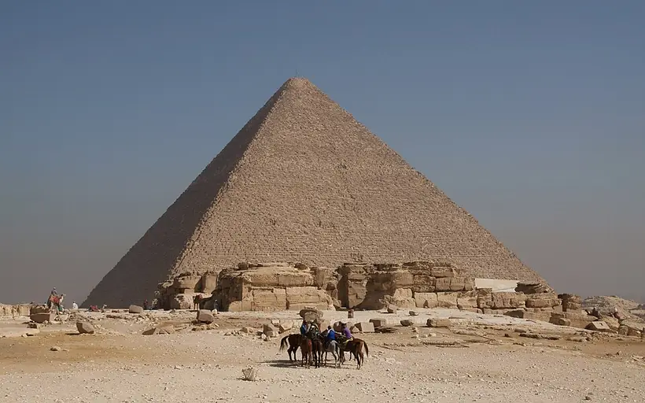
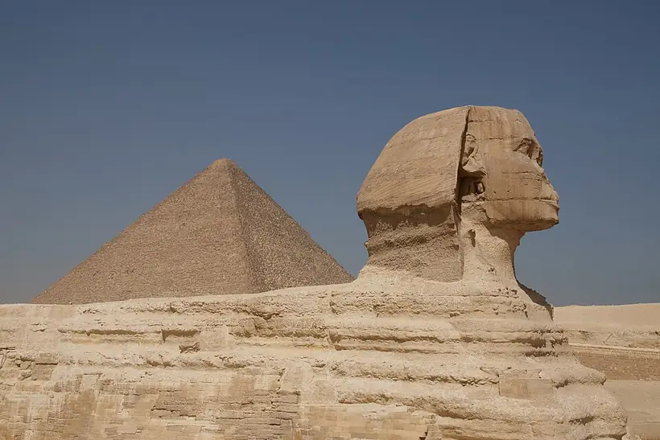
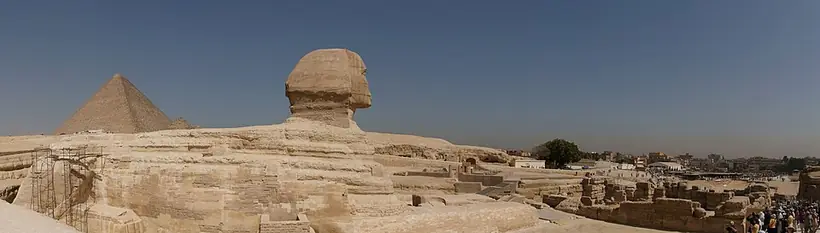

The claim
Christopher Dunn argued in 1998 that the Great Pyramid was a power plant: the King's Chamber, lined with granite containing quartz, would resonate at a specific frequency; the 'shafts' would act as waveguides; chemical reactions in the chamber would supply energy; and the structure would convert it to microwave power.
Maps, diagrams and images






The argument leans on the precision of the masonry and on the granite's quartz content, which is real — granite does contain quartz, and quartz is piezoelectric.
The problems
The hypothesis requires machinery that is absent: no coils, no conductors, no electrodes, no insulators, no residue of any working fluid, no transmission hardware. The chamber is a plain room with a stone coffer in it.
The precision of the masonry is real but has ordinary explanations — careful surveying and a workforce with generations of experience — and it does not imply a function beyond a tomb. The piezoelectric effect in granite is minuscule at any plausible stress and would not produce usable power in a static structure.
Documented: the precision, the granite, the shafts, the chamber.
Not documented: any component of a power system.
Not plausible: the piezoelectric output of stressed granite at the scale required.
The reasoning error: inferring a function from a material property, without any artefact of the function.
The honest label: fringe. It is an engineering thought experiment, not a finding.
Why it is in the archive
Because it is the most technically literate of the pyramid claims, and it fails for a reason worth stating plainly: a machine leaves parts, and this one has none.
Open resources on this topic
- BookThe Giza Power Plant Technologies Of Ancient Egypt The Earth Chronicles, Book 1) Zecharia Sitchin Harper ( 199 — elgamelyan (Internet Archive, free to read)
- PapersOpen-access articles: DOAJ · PubMed Central · Internet Archive Scholar
- BooksPublic-domain and borrowable copies: Open Library · Project Gutenberg · Google Books
More images
Cite this page
Momin, S. (2026). The Giza Power Plant. The Larger World Archive. https://drsamonline.github.io/LARGE_GLOBE/giza-power-plant.htmlMomin, Sohil. “The Giza Power Plant.” The Larger World Archive, 2026, https://drsamonline.github.io/LARGE_GLOBE/giza-power-plant.html.Momin, Sohil. “The Giza Power Plant.” The Larger World Archive, 2026. https://drsamonline.github.io/LARGE_GLOBE/giza-power-plant.html.@misc{the2026giza,
author = {Momin, Sohil},
title = {The Giza Power Plant},
year = {2026},
howpublished = {The Larger World Archive},
url = {https://drsamonline.github.io/LARGE_GLOBE/giza-power-plant.html},
note = {Last reviewed 20 November 2026}
}Last reviewed 20 November 2026 · Corrections policy · this page is not peer reviewed
Sources for this page
- Wikipedia, “Great Pyramid of Giza” — the structure and its constructionen.wikipedia.org
- Wikipedia, “Piezoelectricity” — the effect the claim leans onen.wikipedia.org
- Wikipedia, “King's Chamber” — the room at the centre of the claimen.wikipedia.org
- Wikipedia, “Egyptian pyramid construction techniques” — the mainstream accounten.wikipedia.org